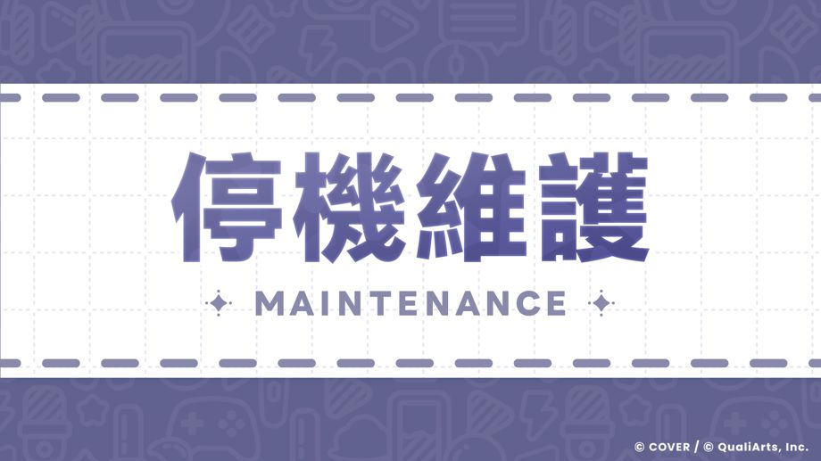

感謝各位玩家的熱烈支持。
我們是「hololive Dreams」營運團隊。
為配合Ver.1.2.100更新，將於以下時間進行維護。
◆停機維護時間
並於停機維護結束後，發放以下道具作為謝禮，感謝各位玩家的配合。
◆禮物
．紅鑽石×100
◆發送期間
2026-10-28 14:00:00,2026-11-12 4:59:59
注意事項
・停機維護期間將無法登入遊玩「hololive Dreams」。
・停機維護開始後，遊玩中的Live與小遊戲等內容，可能無法正常結算結果，請避免於即將進行維護前開始遊戲。
・停機維護時間可能在未經預告的情況下變更。
造成各位玩家的不便，敬請見諒與配合。
今後也請繼續支持「hololive Dreams」。